Employee Exit Process Management
This module allow organization to handle employee exit process or when employee leaving organization.
Main Features :
- Configure Checklists For Exit Process
- Employee Exit Request
- Employee Exit Checklists
- Print Employee Exit PDF Report
- For more details please see video or contact us.
Notes: Two new groups has been added:
1. Department Manager
2. Genaral Manager.
So we have added record rules and ACL which will take care of exit process requests and its workflow!
Menus Available:
- Employees
- Configuration
- Employee Exit
- Exit Requests
- Employee Exit Checklists
Menu - Configure Checklists
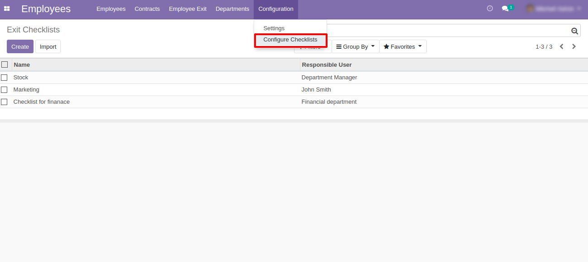
List View Of Configure Exit Checklists
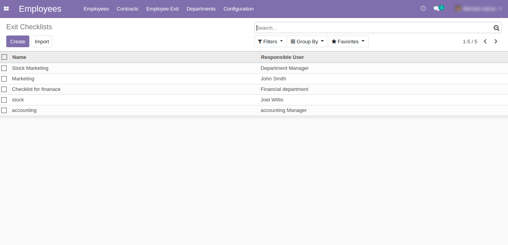
Configure Checklists - For Exit Process
This configuration allow organization to setup all checklist which must be pass before employe exit company. This is kind of initial setup and will be used during exit process. As you can see in screenshot in example, checklist of account department with all checklist listed.
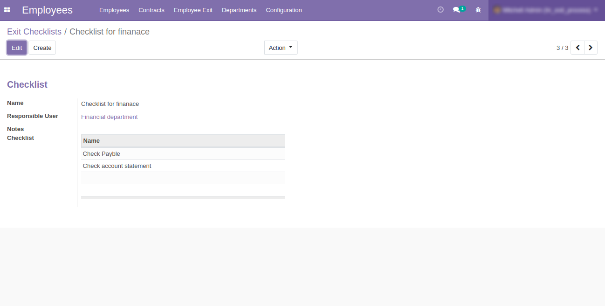
Menu - Employee Exit/ Exit Requests
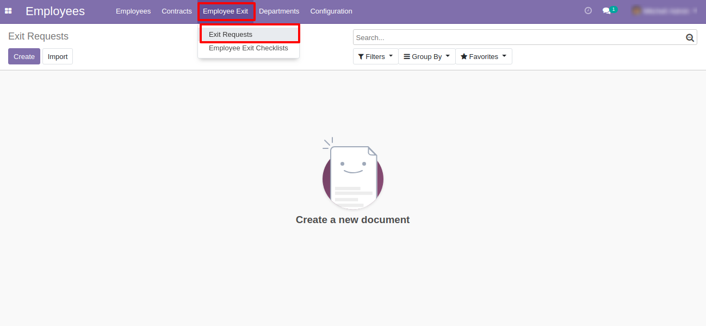
List View Of Employee Exit Requests
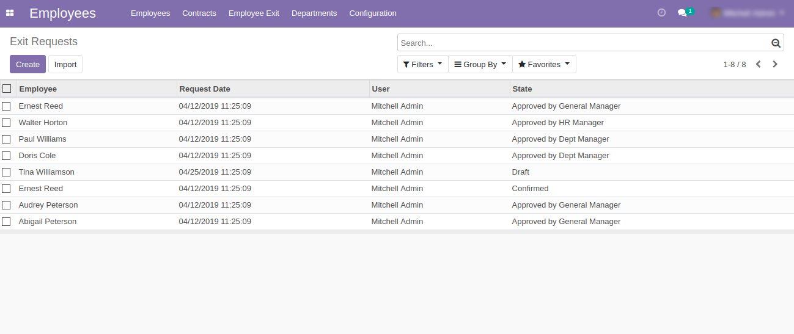
Employee Exit Request
Below screen allow employee to request for exit in orginization. Employee request and confirm request and then it will be passed to workflow of approvals. Draft-Confirmed-Approved by Depatment-Apporoved by HR-Approved by General Manager-Done
We have interated calendar meetings and survey on exit process form. This will allow HR department to arrange meetings with variaous departments and also ask employee to fill exit survey. You can see Meetings, Start Interview and Print Interview button on form.
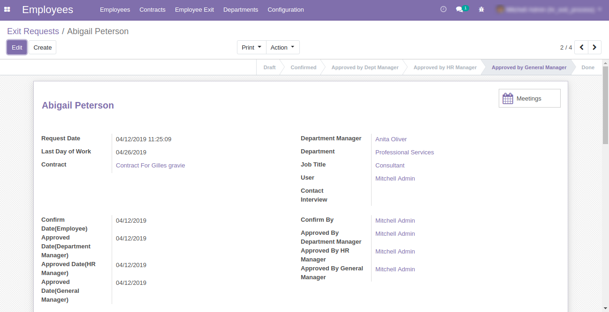
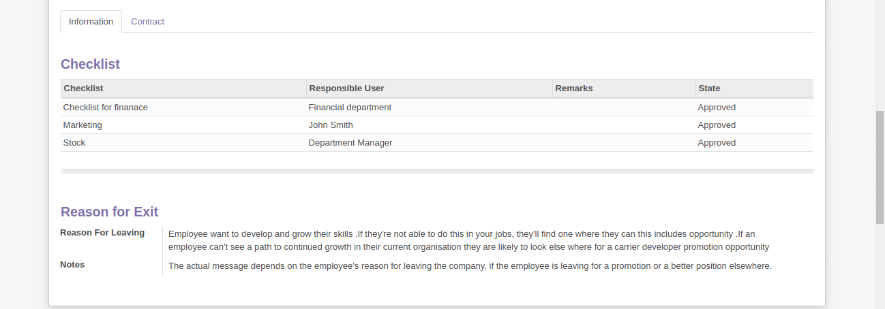
Menu - Employee Exit/ Employee Exit Checklists
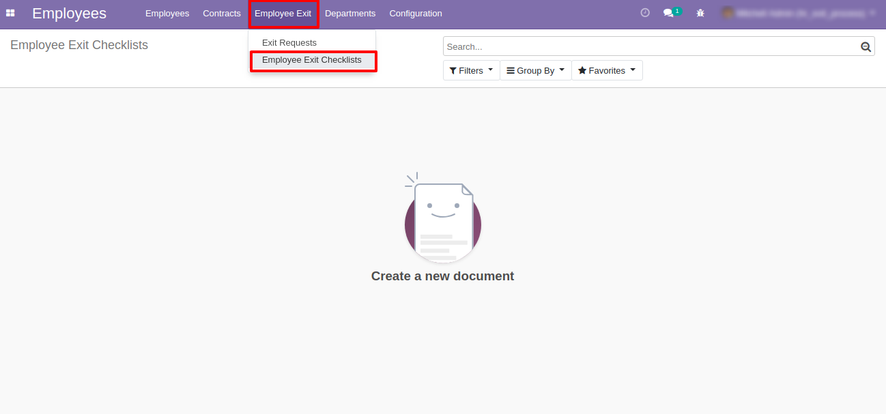
List View Of Employee Exit Checklists
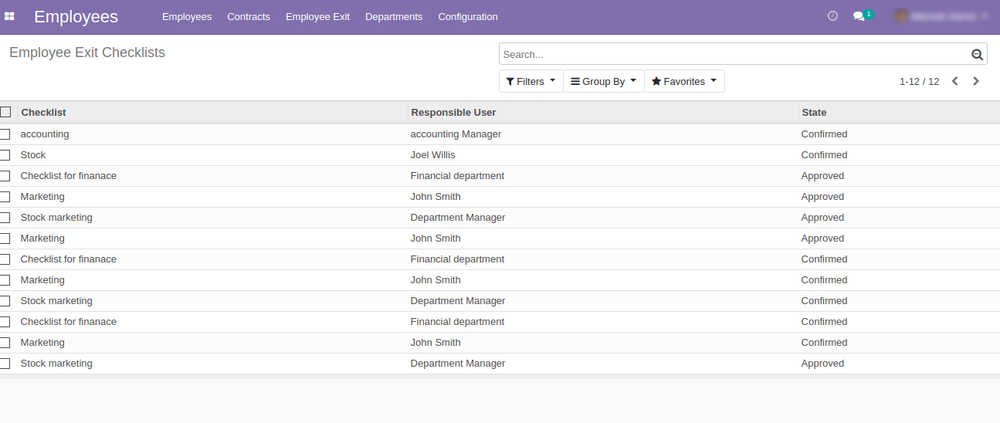
Employee Exit Checklists
This is checklist request sent to respected department for verification and approval. Once department manager approve exit request all checklists configured in the system will make individual checklist request to respected departments for approval. We have also added constraint as well, if all checklists are not approved and HR try to approve exit request then we are showing warning to HR to make sure all resepected departments approval needed.
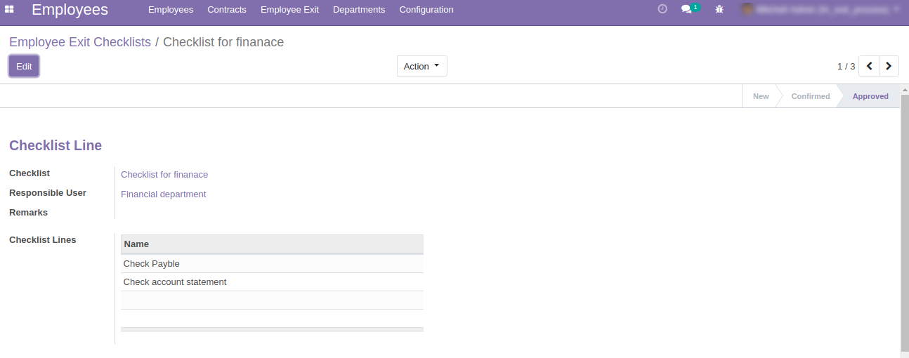
Print Employee Exit Report
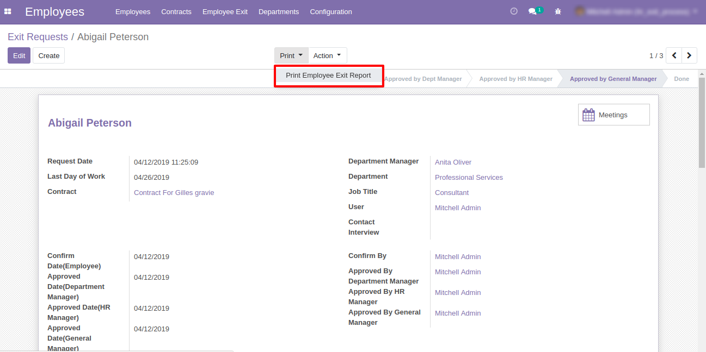
Print Employee Exit Report
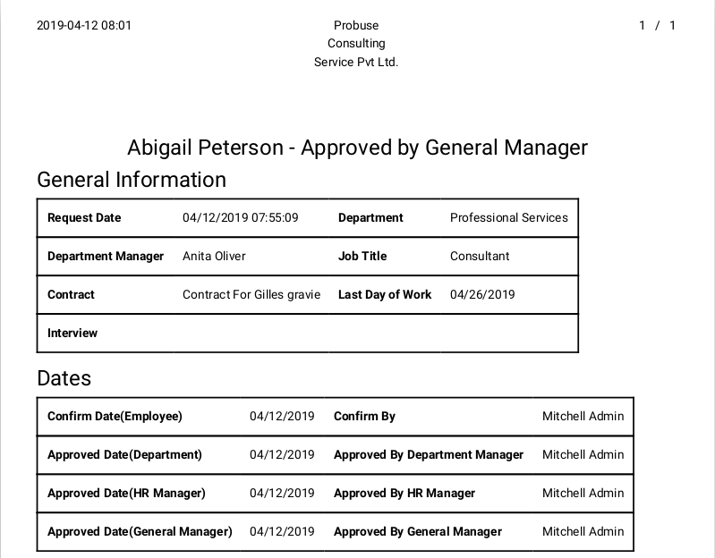
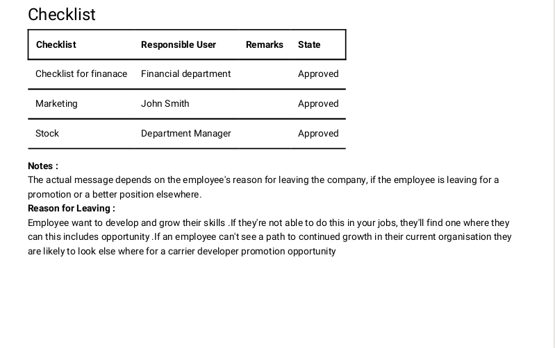
Contact / Support
Introducing
Probuse Consulting Services Pvt. Ltd.
Probuse Consulting Service Pvt Ltd is an Software and Web development specialist which offers complete business application together. We are well experienced to provide a face for your business on the software and Internet level.
Probuse Consulting Service Pvt Ltd is a specialist in Odoo/OpenERP services and could give your business open source hand to drive.
Our Services